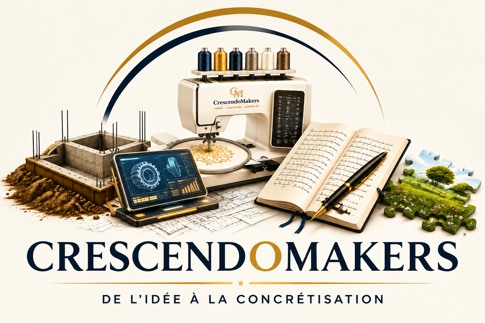
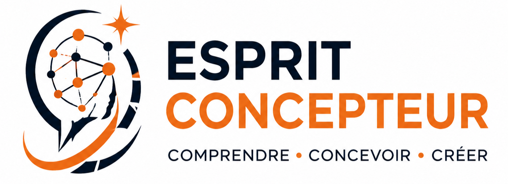
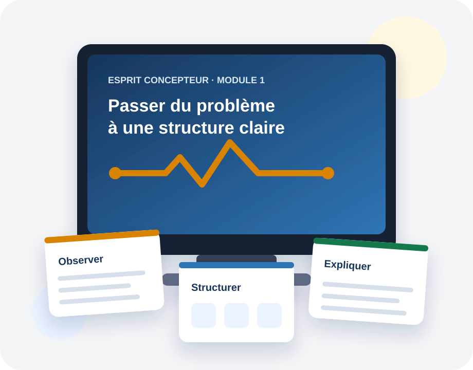
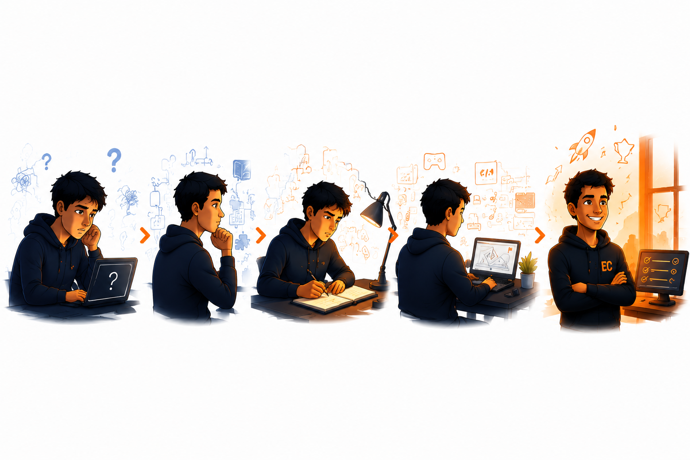
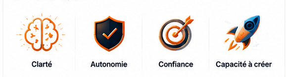
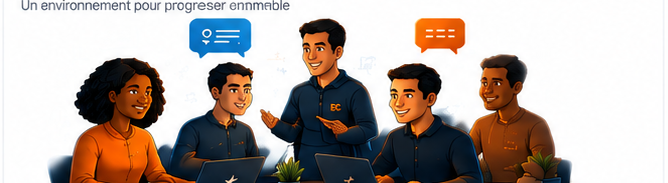
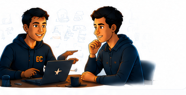

Il peut te convenir si…
- tu apprends déjà, mais tu bloques sans guidage ;
- tu veux mieux comprendre comment aborder un problème ;
- tu acceptes une progression par la pratique et la réflexion.

Esprit ConcepteurModule 1

Tu comprends quand on te guide, mais tu bloques lorsqu’il faut avancer seul ?
Le Module 1 t’aide à reprendre la main quand le tutoriel ne suffit plus.
Autonome · paiement unique · accès personnel à vie, tant que l’offre est exploitée ou que son accès est assuré.
Même avec une demande claire, tu peux hésiter pour commencer, te perdre dans la conception ou tourner en rond face à un bug. Le Module 1 travaille les premières fondations pour mieux comprendre ce qui te bloque et choisir une prochaine étape vérifiable.
Autonome · paiement unique · accès personnel à vie, tant que l’offre est exploitée ou que son accès est assuré.

Commencer, choisir comment organiser une solution, comprendre pourquoi elle ne fonctionne pas : le blocage peut apparaître à plusieurs moments.
Tu relis, tu cherches un autre exemple, tu essaies une correction… sans toujours savoir ce qu’il faudrait regarder en premier. Le problème n’est pas nécessairement ta motivation ou ta capacité à apprendre : il peut te manquer des repères pour examiner la situation et décider quoi essayer ensuite.
Le Module 1 est conçu comme une première étape autonome pour les personnes qui veulent progresser sans brûler les étapes.
Le passage décisif se situe entre « je vois comment cela fonctionne » et « je sais par où commencer lorsque personne ne me montre le chemin ».

L’enjeu n’est pas de recevoir une solution toute faite, mais de rendre un premier pas suffisamment clair pour pouvoir le discuter, le tester et l’améliorer.
Illustration fictive
Exemple fictif créé pour cette présentation, distinct des exercices du cours. Il illustre un changement de raisonnement, sans constituer un résultat d’apprenant ni promettre la résolution de tous les bugs.
Une expérience issue du terrain
Avec plus de dix ans d’expérience en développement logiciel et une expérience d’encadrement pédagogique à l’ETNA, à Paris, il a conçu Esprit Concepteur à partir d’un constat concret : comprendre une explication ne suffit pas toujours à savoir par où commencer lorsqu’il faut construire par soi-même.
Son activité professionnelle porte notamment sur le développement logiciel, l’architecture applicative et la formation.
Tu pratiques ta manière d’aborder un problème, au-delà de la syntaxe d’un langage particulier.
Situations concrètes, exercices et exemples de résolution t’aident à travailler un raisonnement que tu peux expliquer et vérifier. L’objectif est de gagner progressivement en autonomie et en confiance, tout en sachant demander une aide plus précise. Tu peux commencer par ce module séparément et décider plus tard si tu souhaites poursuivre.

Identifier plus précisément ce qui bloque et retrouver un point de départ.
Avancer sans dépendre systématiquement d’un tutoriel qui montre exactement quoi faire.
Remplacer une partie du brouillard par une démarche que tu peux expliquer et vérifier.
Commencer à transformer une idée ou un problème en objet de conception exploitable.
Il introduit des grilles de lecture pour mieux cadrer une situation, puis commence à travailler la capacité à modéliser un problème.
Un parcours à expérimenter, pas une bibliothèque de vidéos.
Tu avances à travers des situations concrètes. Tu expérimentes tes propres approches, puis tu peux les confronter à des exemples de résolution. Des vidéos accompagnent certaines étapes pour t'aider à comprendre, prendre du recul et progresser.
Le fil rouge du Module 1 : commencer à rendre ton raisonnement visible pour transformer une difficulté ou une idée en un point de départ exploitable.
Tu comprends une explication, mais seul, tu ne sais pas toujours ce qui te bloque ni comment organiser ton approche.
Des situations simples, parfois inspirées du quotidien, des essais personnels et des exemples de résolution t’aident à observer ton raisonnement et à structurer progressivement une situation. Les vidéos ciblées apportent les explications utiles au parcours.
Mieux nommer une difficulté, rendre les éléments d’un problème plus explicites et donner à une idée un premier contour exploitable. Des fondations pour aborder tes prochains projets avec davantage de repères.
Le module introduit ces fondations. Leur approfondissement sur des problèmes techniques, avec retours et accompagnement, appartient au parcours complet en préparation. Les ressources du Module 1 sont publiées progressivement lorsqu’elles sont prêtes.
Lorsqu’elle est ouverte, elle est gratuite et destinée aux échanges entre participants. Si elle est déjà disponible lors de ton inscription, ses modalités d’accès te seront communiquées avec tes informations d’accès. Dans le cas contraire, elles te seront transmises lorsqu’elle sera mise en place.
Discord est le service actuellement envisagé pour cet espace, à titre de bonus facultatif et remplaçable.
Elle reste facultative : son absence n’empêche pas de suivre ou de terminer le Module 1.

Via le formulaire de contact, les membres de la cohorte fondatrice peuvent proposer des remarques et améliorations concernant les cours.
Des annonces concernant les évolutions du parcours peuvent être communiquées via le canal de la communauté lorsqu’il est disponible, même pour les apprenants qui suivent le Module 1 en autonomie.
Après avoir terminé le Module 1 et après sélection, tu peux devenir mentor bénévole pour les nouveaux apprenants de ce module, en autonomie ou dans la formation complète accompagnée. Ce rôle est facultatif et non automatique ; la sélection tient compte de la maîtrise, du comportement, des disponibilités et des besoins.
Ces possibilités sont un avantage de la cohorte fondatrice, pas une condition pour suivre ou terminer le Module 1.
Le Module 1 est une première étape autonome d’Esprit Concepteur. Il travaille les fondations pour mieux identifier un blocage, formuler une piste et expliquer puis vérifier ton raisonnement.
Le format pédagogique peut évoluer au fil des améliorations. Il repose sur des vidéos ciblées, des documents de travail, des exercices pratiques et des exemples de résolution — sans catalogue figé de leçons à consommer.
Prix de lancement · 60 jours
Esprit Concepteur — Module 1 autonomeTVA non applicable, art. 293 B du CGI
Paiement unique · sans abonnement ni reconduction automatique.
Le Module 1 est proposé séparément. Les autres modules et l’accompagnement individuel ne sont pas inclus. La formation complète est en préparation.
Aucune URL de paiement fictive dans la maquette.
La formation complète avec accompagnement est en préparation. Le parcours prévu intégrera le Module 1 avec accompagnement dès cette première étape. Tu peux commencer par le Module 1 autonome et envisager la suite lorsqu’elle sera disponible.
Module 1 autonome : une première étape accessible séparément, à ton rythme.
Formation complète en préparation : un parcours prévu avec accompagnement dès le Module 1, présenté séparément avant toute commande.

Il travaille les premières fondations pour mieux identifier un blocage, formuler une piste et expliquer ton raisonnement. La difficulté peut apparaître même lorsque la demande est claire : au démarrage, dans la conception ou quand ce que tu as construit ne fonctionne pas comme prévu.
Tu ne cherches pas seulement à mémoriser davantage de contenu technique. Le Module 1 te fait pratiquer ta manière d’observer et de structurer une situation lorsque l’exemple ne suffit plus, à travers des situations concrètes et des exemples de résolution.
Oui. C’est une première étape autonome, proposée séparément. Il introduit les premières fondations d’Esprit Concepteur ; les autres modules et l’accompagnement individuel ne sont pas inclus. La formation complète est en préparation.
L’objectif est de développer des repères pour mieux comprendre un blocage et choisir une prochaine étape vérifiable. Cela demande de pratiquer : le module ne garantit ni emploi, ni niveau professionnel, ni résolution de tous les bugs. L’autonomie inclut aussi savoir demander une aide plus précise.
Non. Cela signifie notamment mieux repérer ta difficulté, expliquer ce que tu as essayé et demander une aide plus précise. Tu gardes une part active dans le raisonnement au lieu d’attendre uniquement une solution à reproduire.
Le Module 1 n’exige pas la maîtrise préalable d’un langage ni d’être particulièrement bon en maths. Il faut surtout être prêt à réfléchir et à pratiquer progressivement. La formation ne délivre ni diplôme ni certification.
Tu expérimentes des situations concrètes, puis tu confrontes ton approche à des exemples de résolution. Des vidéos ciblées et des documents de travail accompagnent cette pratique. Les ressources sont publiées progressivement et peuvent être améliorées.
Oui. Prévois en moyenne 2 à 4 heures par semaine, selon tes disponibilités et ton rythme. Tu progresses personnellement à ton rythme, en fonction des contenus disponibles.
La date d’ouverture est communiquée avant commande. Selon cette date et ton choix concernant l’accès anticipé, l’accès est ouvert après confirmation du paiement et recueil des consentements requis, ou après le délai légal de rétractation. À l’ouverture, la bienvenue/onboarding et la vidéo d’introduction sont disponibles ; les autres cours et exercices arrivent progressivement.
Si le parcours ne répond pas à tes attentes, tu peux écrire à contact@crescendomakers.net en décrivant ta difficulté et ta commande. Ta demande sera examinée pour déterminer la réponse adaptée au problème rencontré. Les conditions de rétractation, les garanties légales et les recours applicables sont présentés avant la commande ; une demande liée à l’insatisfaction ne donne pas automatiquement droit à un remboursement.
Oui. Le parcours aide à mieux formuler ce que tu cherches, garder un regard critique et reprendre la main lorsque la réponse de l’outil ne suffit plus.
Oui, lorsqu’elle sera disponible. Ton achat ouvre un crédit personnel, détaillé dans l’offre. Pour les fondateurs, sa valeur correspond pendant 36 mois au prix public normal du Module 1 lors du passage ; ensuite, le crédit demeure égal au montant payé. Demande son application avant la nouvelle commande.
Lorsqu’elle est ouverte, elle est gratuite et facultative. Discord est le service envisagé pour ce bonus remplaçable. La communauté peut être mise en place ultérieurement ; son absence n’empêche pas de suivre ou de terminer le Module 1.
Tu peux commencer avec le Module 1 en autonomie, à ton rythme. L’objectif : mieux comprendre ce qui te bloque et savoir quelle piste examiner ensuite.
État de travail — publication uniquement après branchement et contrôle de l’URL réelle de paiement.